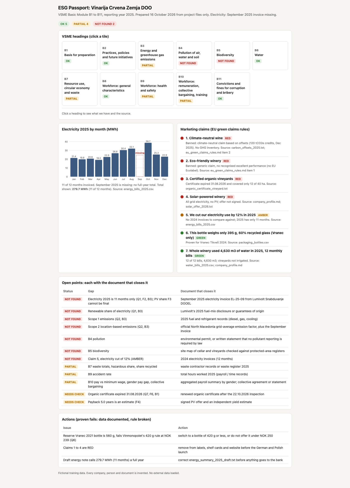
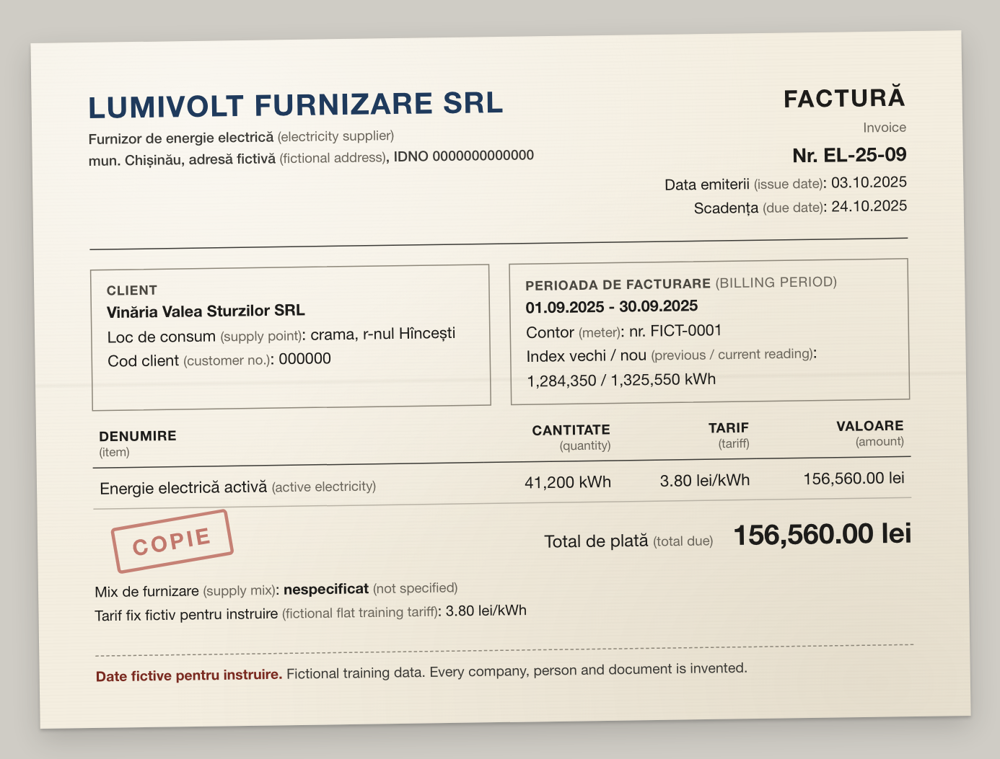
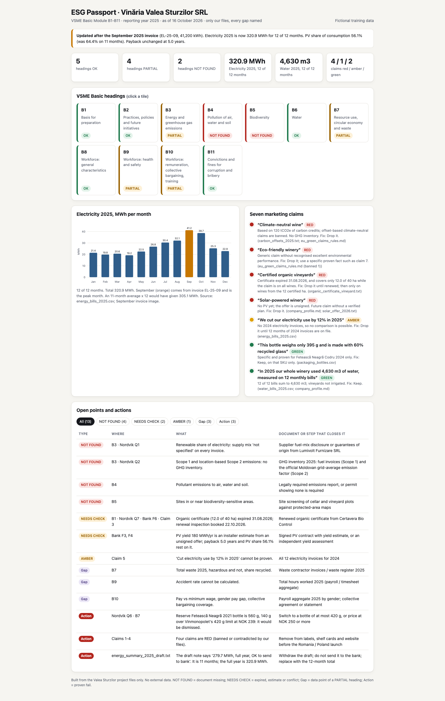

1energy_bills_2025.csv
2025-01 … 2025-08,
2025-10 … 2025-12
0102030405060708101112
TrapClean
 ×
×
From Raw Inputs to Clearer Insights
Tim Löhr · North Macedonia · 16 October 2026 · 60 minutes
Before we start · 30 seconds
“Hi, I’ve put 279.7 MWh
in the bank form for 2025.
That’s what the summary says.
Can you check it before
I send it?”
energy_summary_2025_draft.txt · written by the office manager
Thumbs up or thumbs down. Keep your answer, we'll come back to it.
Your host
ESG questionnaires mostly ask for facts
you already have, with a deadline.
M.Sc. Computer ScienceFAU Erlangen-Nürnberg
EU rules · 2026
CSRD
Corporate Sustainability
Reporting Directive
The EU law that sets sustainability reporting rules for large companies.
CSRD from 2027: over 1,000 staff
and over EUR 450m turnover
Dir. (EU) 2026/470
Your SME
Questionnaires
CSRD value chains
Buyers
Client ESG data
EBA guidelines · EU banks
and their groups · 11 Jan 2026
Banks
No vague ‘eco’ claims
Dir. 2024/825
Germany: since 27 Sept 2026
Poland: from 27 Sept 2027,
already illegal if misleading
Labels
New bottle-weight rule
Vinmonopolet · 1 Jan 2026
Shelves
One set of checked facts
can answer all four.
What hurts
BuyerSweden
BankNorth Macedonia
Both get filled in by hand.
One questionnaire costs
EUR 0 to 0
by firm size, mostly staff time
2023 survey, 13 EU countries · EFRAG CBA 2024
Small EU firms asked
EFRAG CBA 2024 · pre-2026 forecast
Key figures
EC, 2019 data
of firms are SMEs
EC, 2019 data
of jobs are in SMEs
SME large firm 1 square = 1% of firms
of firms are SMEs
EC SME fact sheet 2021 · SSO data for 2019
of goods exports go to the EU
Goods exports 2024
EUR 7.78bnEU-27 about EUR 5.99bn
rest of world
EC North Macedonia Report 2025 · 2024 data
No EU reporting law covers your SME.
No EU reporting law covers your SME.Your EU buyer, your bank and EU label rulesdo.
EU
North
Macedonia
Today 16 Oct 2026
Feb 2025 · AI literacy
ensure a sufficient level
take measures to support it
2 Aug 2026
AI Act applies in general,
with exceptions
High-risk rules
Dec 2027
Aug 2028
Oct 2026: AI law
none yet
the EU asks to align
Law 42/2020
data protection, modelled on the GDPR;
full alignment still pending
EUR-Lex: AI Act 2024/1689, Omnibus 2026/1744 · EC North Macedonia 2025 Report · checked Oct 2026
Hiring, education, biometrics.
Drafting ESG answers
is not one of them.
High-risk AI · from Dec 2027
AI Act 2024/1689, Annex III · Omnibus 2026/1744
Claude is officially supported in North Macedonia
anthropic.com/legal/supported-regions, Oct 2026
EU AI Act Art. 4 · as amended 2026
Support AI literacy:
your team checks AI output.
Omnibus 2026/1744 · no set level
Our rule today
No personal data,
only totals.
Law on Personal Data Protection 42/2020
Model training onoff
Free, Pro, Max
Our example company
Kavadarci municipality, Tikveš wine region Fictional
kit: company_profile.md, inbox/ · map: export shares
Mon
Tue
Wed
Thu
Fri
Then
Every company and bank here is invented,
but the laws we quote are real.
Today is 16 October 2026.
Every “still valid?” check depends on this line.
Only our files. Never invent a number.
Cite file and line. Calculate in code, with units.
Missing → NOT FOUND.
Expired, estimate, conflict → NEEDS CHECK.
Several parts → the weakest one.
Rule 1
Only our files. Never invent a number.
Rule 1 prevents
invented numbers
Rule 2
Cite file and line. Calculate in code, with units.
Rule 2 prevents
answers nobody can check
Rule 3
Missing → NOT FOUND.
Expired, estimate, conflict → NEEDS CHECK.
Several parts → the weakest one.
no file in the folder
expired, estimate or conflict
Several parts? The weakest part sets the status.
Today is 16 October 2026. Fictional training data. Every company, person and document is invented. You are the ESG evidence assistant of Vinarija Crvena Zemja DOO, a winery in North Macedonia. Answer in plain, short English unless I ask for another language. Three rules: 1. Only our files. Never invent a number. 2. Cite the file and line for every fact (line numbers as in a text editor, counting every line). Do every calculation in code, with units. 3. Missing document: write NOT FOUND and name the document that would prove it. Document exists but is expired, an estimate or in conflict with another file: write NEEDS CHECK and give the reason in one sentence. If a document is missing and another file also conflicts, write NOT FOUND and name the conflict in the reason. A question with several parts gets the status of its weakest part. People data stays aggregated: no names, no individual records.
kit: project-instructions.md · Copy takes the full text
Even AI tools built for lawyers got 17 to 33% of answers wrong (Magesh et al., 2025).
So a person checks each answer.
Seven traps and one clean file
are hidden in this folder.Five are on your cards. Claude finds the other two.
Your turn · 3 minutes · in pairs
session 0:00
Five of the seven traps are on these cards. One card is clean. Mark each card as trap or clean.
1energy_bills_2025.csv
2025-01 … 2025-08,
2025-10 … 2025-12
TrapClean
2energy_summary_2025_draft.txt
DRAFT. Internal note from the
office manager, not checked.
“Hi, I’ve put 279.7 MWh in the
bank form for 2025. That’s what
the summary says. Can you check
it before I send it?”
TrapClean
3organic_certificate_vineyard.txt
Scope: vineyard, 12.0 ha of 40 ha
Valid until: 31.08.2026
TrapClean
4carbon_offsets_2025.txt
Item: forest carbon credits,
120 tCO2e
Handwritten note: “use for
climate-neutral label”
TrapClean
5solar_offer_2026.txt
NOT SIGNED
Yield: about 180 MWh per year
(installer estimate, not measured)
TrapClean
6water_bills_2025.csv
12 bills
September 980 m³,
the highest month
TrapClean
Keep your sheet. Claude reads the same files in the next step.
Points: 2 per trap found before Claude.
Minus 1 for a false alarm.
Step 1 · MondayNordvik Vin AB · Swedish wine importer, preparing a Norwegian tender
session0:00
new chat · attach inbox/1-nordvik-questionnaire.mdPrompt 1 sent · inbox/1-nordvik-questionnaire.md
Answer the Nordvik Vin AB questionnaire in the attached file. Return one table with exactly one row per question, Q1 to Q8: # | Question | Answer | Source file and line | Status (OK, NEEDS CHECK or NOT FOUND). Before any energy total, count the months in code. Also save the table as nordvik-answers.xlsx, with the Status cells filled green, amber or red. Then write a 3-line summary.
Live in Claude
Prompt 1 · Questionnaire
session clock
0:00
Before Claude answers
Your bet: how many of these 8 come back OK?
Our rehearsal: 4 of 4 runs
Closest bet wins. Q1 as NEEDS CHECK also counts, if the reason names September.
answer key: kit ANSWERS.md, step 1
Q1 · electricity 2025, MWh
NOT FOUND279.7MWh
11 bills: Jan to Aug + Oct to Dec
kit: energy_bills_2025.csv
energy_summary_2025_draft.txt
“Hi, I’ve put 279.7 MWh in the bank form for 2025. That’s what the summary says. Can you check it before I send it?”
Q1 also asks for the renewable share. Every bill says “not specified”.
Q1 · coverage of 2025
0%
11 of 12 months
Nordvik's rule: 95%
3.3 points short
Q2 emissions: no GHG inventory. Offsets don't measure our emissions.
kit: energy_bills_2025.csv · carbon_offsets_2025.txt
Q7 · organic certificate
Expired, and only for 12 of 40 ha.
The BSCI audit (B) isn't a certificate.
kit: organic_cert…_vineyard.txt
Q6 · glass, 0.75 l
Vranec Tikveš 2024
Kratošija Tikveš 2024
Reserve Vranec 2021 · NOK 239
The weights are documented, so Q6 is OK. The 560 g Reserve still fails Norway's rule and needs an action.
kit: packaging_bottles.csv
Vinmonopolet rule, 1 Jan 2026
Q8 · water next to electricity, 2025
Electricity11 of 12
Water12 of 12
4,630 m³, 12 of 12 bills. Nothing is missing, so Claude doesn't flag it.
kit: water_bills_2025.csv · energy_bills_2025.csv
Traps in this step
The missing harvest month, the draft’s “full year” and the expired certificate. Water was clean.
Fictional training data. Every company, person and document is invented.
Step 2 · WednesdayOur marketing team · autumn launch in Germany and Poland
session0:00
new chat · attach inbox/2-marketing-claims.mdPrompt 2 sent · inbox/2-marketing-claims.md
Check the seven claims in the attached file against our files and eu_green_claims_rules.md. Return a table: Claim | RED, AMBER or GREEN | Reason | Source file | Safe rewrite. Put the red ones first.
The rule file in the Project
eu_green_claims_rules.md sums up Directive (EU) 2024/825. Germany: banned since 27 Sept 2026. Poland: from 27 Sept 2027, but misleading claims are already illegal there.
Live in Claude
Prompt 2 · Claims
session clock
0:00
Before Claude answers
Your vote: for each claim, red, amber or green? Cards up when I read it.
0RED
0AMBER
0GREEN
Our rehearsal: 4 of 4 runs
We checked our files only. This isn't legal advice.
Climate-neutral wine
Drop it.
Climate-neutral wine
offsets only, no inventory
Eco-friendly winery
Drop it.
Eco-friendly winery
generic, no recognised label
Certified organic vineyards
Drop it.
Certified organic vineyards
expired, only 12 of 40 ha
Solar-powered winery
Drop it.
Solar-powered winery
grid power, PV unsigned
We cut electricity 12% in 2025
no 2024 bills, Sept missing
This bottle weighs only 395 g, 60% recycled
this label only
4,630 m³ water, 12 monthly bills
keep as written
Vote now: red, amber or green? Then convince your neighbour. 60 seconds.
EU blacklist: offset-based “climate neutral” and generic “eco”. Germany: banned since 27 Sept 2026. Poland: from 27 Sept 2027, but misleading claims are already illegal there. Directive (EU) 2024/825
Claims 3 and 4: the certificate expired and the solar offer is unsigned. Claim 5 has no 2024 bills.
Claims 6 and 7 stay: each gives a measured fact and has a file behind it.
Traps in this step
Offsets behind “climate neutral”, the expired certificate, a future solar plan and “organic” on every wine for 12 of 40 ha.
Fictional training data. Every company, person and document is invented.
Step 3 · FridayBanka Povardarie · solar loan of 8,550,000 MKD
session0:00
new chat · attach inbox/3-bank-form.mdPrompt 3 sent · inbox/3-bank-form.md
Fill in Banka Povardarie's form in the attached file. Return one table: Field | Answer | Source file and line | Status (OK, NEEDS CHECK or NOT FOUND). Calculate F4 in code with the formula printed on the form. Mark every estimate.
Modelled on the screening every bank lending EBRD money must do.
EBRD Environmental and Social Policy 2024, ESR 9
The EBRD lent EUR 8m to Sparkasse Bank Skopje for SME green loans.
EBRD press release, 18 Dec 2025
Live in Claude
Prompt 3 · Bank form
session clock
0:00
Before Claude answers
Race Claude: payback in years? 8,550,000 MKD ÷ (180,000 kWh × 9.50 MKD/kWh). Phones allowed.
Screening form · Banka Povardarie AD Skopje
F1Environment, labour and safety fines
OKF2Electricity consumption 2025, MWh
NOT FOUNDF3Estimated solar output, share of use
NOT FOUNDF4Simple payback, years
5.0 years (computed in code; estimate)
NEEDS CHECKF5Average headcount, work accidents 2025
OKF6Valid certificates and audits
NEEDS CHECKSame question as Monday
F2 = Q1
The bank asks for electricity 2025, the number that was missing on Monday.
kit: inbox files 1 and 3
F4 · in code, the bank's formula
code
>>>
5.0
180,000 kWh × 9.50 MKD/kWh
= 1,710,000 MKD a year
uses the installer's 180 MWh estimate
bank's formula, not an investment case
F2 · electricity 2025, MWh
The summary says the full year is covered. The bills show 11 months.
kit: energy_bills_2025.csv
kit: energy_summary_2025_draft.txt
F3 · solar share of consumption
64.4%of 11 months
F3 needs F2,
and F2 is
NOT FOUND.
The weakest part
sets the status.
kit: solar_offer_2026.txt
kit: energy_bills_2025.csv
MondayQ1
FridayF2
FridayF3
What this step showed
The missing September bill hits Q1 on Monday and F2 and F3 today. Adding it to the folder updates all three.
Fictional training data. Every company, person and document is invented.
session 0:00
Fictional training data. Every company, person and document is invented.
new chat · attach inbox files 1, 2 and 3 again
The three attached files are this week's requests. Build our ESG Passport: one row per VSME Basic heading B1 to B11 from vsme_basic_headings.md, with what we have, the source file, the status (OK; PARTIAL when some of the heading's data points are proven and others are missing, naming the missing ones; NOT FOUND when we have nothing; judge each heading for reporting year 2025 and put anything that expired or changed since then in the open points), and which questions in the attached files it answers. Use only the statuses OK, PARTIAL and NOT FOUND. Deliver it two ways: 1. An interactive one-page dashboard as an artifact: status tiles B1 to B11 that open what we have and the source when clicked, a 12-month electricity bar chart in MWh that shows the missing month, a red, amber or green light for each of the seven claims, and the open points: every NOT FOUND, NEEDS CHECK and partial gap, each with the document that would close it. List a proven fail (data documented, rule broken) as an action, not as NEEDS CHECK. One self-contained file, no external data. 2. esg-passport.docx, ready to send.
Warm-up, 1 point: what will the chart do with September? A gap, an average, a zero, or an error?
Bet, 2 points: how long will Claude need for the passport, dashboard and docx? Under 4, 4 to 7, or over 7 minutes?
Rehearsal split
B3 may read NOT FOUND until the September bill arrives. Runs vary, so a person checks.
answer key: kit ANSWERS.md, step 4
kit: vsme_basic_headings.md
Each tile answers several questions.
Claude’s dashboard from the 12 October rehearsal. Today’s run is live. 5 OK, 4 partial, 2 not found.
Monday's to-do

No September bill, so the chart shows a gap.
B4, B5: NOT FOUND, as expected.
From 2027, for their own CSRD report, large firms may not demand more than the data points in Annex II of the voluntary standard from firms with up to 1,000 staff. Banks and shelves keep their own rules.
Dir. (EU) 2026/470session 0:00
Fictional training data. Every company, person and document is invented.
same chat · attach inbox/4-september-invoice.png
I attached the September 2025 electricity invoice. Read it first. Then recheck every answer from this week that depends on electricity. Also say what the invoice means for the draft energy summary, and how wrong the year would have been if we had estimated it as the 11-month average × 12. Return a table with one row per question or form field: Where | Before (value and status) | Now (value and status) | Why. Then update the dashboard and esg-passport.docx.
Your bet: the 11-month average says 305.1 MWh for the year. Is the real year higher, the same or lower? Thumbs: up = higher, sideways = same, down = lower.

kit: inbox/4-september-invoice.png
41,200 kWhQ1 · Nordvik
Electricity 2025Before
279.7 MWh · 11 months
F2 · Bank
Electricity, MWhBefore
279.7 MWh · 11 months
F3 · Bank
Solar share of useBefore
64.4%
B3 · Passport
Energy and GHGBefore
11 of 12 months

September 2025 · invoice EL-25-09
41.2MWh
Peak month305.1
11-month average × 12
320.9
the real year, 15.8 MWh more
kit: energy_bills_2025.csv + invoice EL-25-09
Months covered before91.7%
kWh covered before87.2%
Unchanged, correctly
What changed
The draft note was 41.2 MWh short. Claude rechecked six answers and two statuses changed.
Back to minute one
“Hi, I’ve put 279.7 MWh
in the bank form for 2025.
That’s what the summary says.
Can you check it before
I send it?”
energy_summary_2025_draft.txt · written by the office manager
279.7MWh
12 of 12 bills
kit: energy_bills_2025.csv + invoice EL-25-09
session 0:00
By hand · EU benchmarks
0 to 0 days
for a first Basic VSME report
under 20 staff: 15 · 20+, in-house: 40
EFRAG cost-benefit analysis 2024
A full report is a much bigger job than 21 answers. Most of the time saved comes from the folder.
Today · in this room
steps 1 to 5 on the session clock, talk included
answers, each sourced or flagged
Not counted: building the folder and checking the answers.
Why it was faster
1. The folder was ready. That saved the most time.
2. Claude matched files and did the maths.
60 seconds · cards up
A certificate expired last month.
There is no file at all.
The data is documented, and it shows we break a rule.
Workshop 04 · North Macedonia · 16 October 2026
2025 · all 12 power bills, MWh
kit: energy_bills_2025.csv + invoice EL-25-09
Monday: one folder
Replay it at your desk
Download the kit from the workshop page.
Tim Löhr · loehrning.ai
Questions?